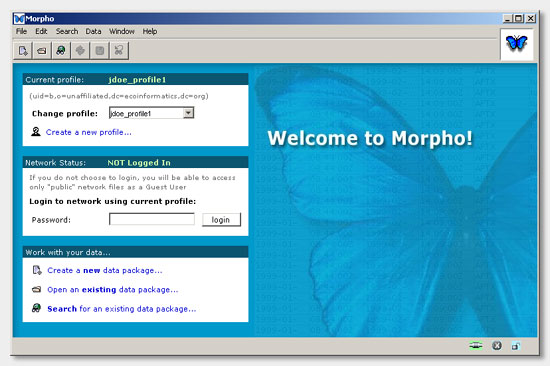

Morpho User Guide
|
Morpho User Guide
|
 Getting
Started Introduction
to Data Packages Getting
Started Introduction
to Data Packages |
| The Main Welcome Screen | ||||||||||||||||||||
After you have opened Morpho and created a profile, you will see the "Welcome to Morpho!" screen. 
Welcome Screen Panels Notice that there are three panels on the left side of the screen - the "Profile" panel at the top, the "Login" panel in the middle, and the "Work with your data" panel at the bottom. Each of these is described below.
The top of the panel shows the current profile setting. You can use the drop-down list to change profiles, or you can click on the link to create a new profile.
The top of the panel shows your login status. If your status is "NOT Logged In", you can type your password in the "Password" field and click the "Login" button to login to the KNB network. You will be logged in with the username from the current profile, shown in the Profile panel.
After you are logged in, you will see the following:
Clicking on the "Logout from network" link will log you out of the KNB network.
This panel contains clickable links which allow you to:
A description of what each of these links does is provided later in
this guide, on the "Creating
a New Data Package", "Opening
an Existing Data Package", and "Searching
for Data Packages"
pages.
Menus The menus at the top of each morpho screen allow you to access all the operations that are available in Morpho.
Items will sometimes appear grayed out, meaning they are not available for use with the current data package. For example, copy and cut will be disabled on the Edit menu if you do not currently have any item selected. (MAYBE GIVE A MORE RELEVANT EXAMPLE)
It is a good idea to take a moment and familiarize yourself with the contents of each of the menus. (Finalize these menu descriptions with later Morpho)
Under this menu, you'll find prompts for creating a new data package, opening an existing data package, logging in and out of the KNB network, creating a new user profile, saving a data package, deleting a data package, printing metadata, setting preferences, exiting Morpho, and other options.
In this menu, you can cut, copy or paste items, as well as reverse changes you have made to a data table or to a set of data tables.
Under this menu, you have the options of searching for data packages, saving a search for future use, refining a search by changing search parameters, or refreshing the current search.
This menu allows you to add, delete, or change a variety of different types of documentation (metadata) for your data package. You may add or edit general documentation for the data package, or more specifically add or edit informaiton on the research project and usage rights related to the data package, as well as the geographic, taxonomic, and temporal coverages of the data.
This menu is where you will find tools that allow you to import a data object (such as a table or an image), or create a data table. Also, you may edit and manipulate the data in a data table using commands found under this menu. Finally, you may also add or edit the metadata for your data columns under this menu.
Under this menu you can view different windows that are open in Morpho.
This is where you can access the Morpho User Guide, which contains help
on all Morpho features. There is also an "About" item where you can read
general information about Morpho.
Toolbar The toolbar contains shortcut buttons to the more commonly-used commands found in the menus. The purpose of each button is described below. If you ever forget what a button is for, simply place your mouse cursor over the button and a small pop-up reminder will display the purpose of the button.
(There are and may be more/different buttons)
Status Bar The status bar contains information about the current status of various Morpho settings and parameters. For example, when search results are displayed, the number of 'hits' is shown on the left end of the status bar. (Add another example).
The three icons located at the right end of the status bar indicate the following:
* Note that Morpho does not currently support SSL connections. (An SSL connection is.....)
Read an Introduction to Data Packages on the next screen to learn more about what they are and what they look like.
|
| Getting
Started Introduction
to Data Packages |